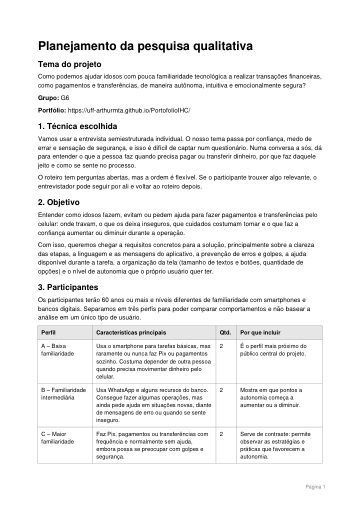
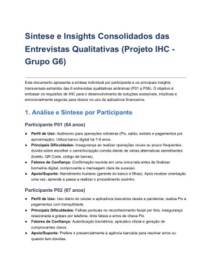

Etapa 05 de 10
Pesquisa com usuários
Ouvimos o público de duas formas: um formulário online e seis entrevistas.
Formulário
Formulário da pesquisa Google Forms · abre em uma nova abaEntrevista
Antes de entrevistar, montamos o planejamento da pesquisa: a técnica escolhida, quem vamos ouvir, como a conversa vai acontecer e o roteiro completo de perguntas.

Planejamento da pesquisa qualitativa PDF · 6 páginas Ler aquiDepois das seis entrevistas, juntamos o que cada participante contou e os principais insights em um só documento.

Síntese e insights das entrevistas PDF · 5 páginas Ler aqui Materiais das entrevistas Entrevistas em documento e termos de consentimento